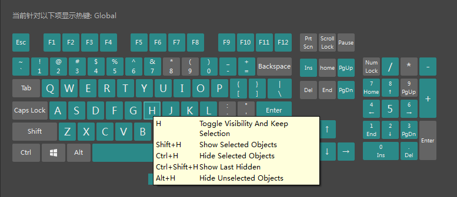

Maya 包括许多预制的命令（称为运行时命令），这些命令与可以在界面（例如，菜单项、编辑器等）中完成的操作相对应。这些命令按类别进行组织。
将热键指定给现有命令
- 选择。
- 在“为以下项编辑热键”(Edit Hotkeys For)列表中单击类别名称以显示命令的子列表，然后单击要为其指定热键的命令。
- 从“热键”(Hotkey)字段旁边的菜单中选择“按下”(Press)或“释放”(Release)。
提示： 如果希望
Maya 在您按下键时运行命令，请单击新热键旁边的箭头，然后选择
“按下时”(On Press)。选择
“释放时”(On Release)可使
Maya 在您释放键时运行命令。
“按下时”(On Press)和“释放时”(On Release)之间的区别非常重要，例如在为捕捉模式指定热键时。即：为按下键指定启用捕捉模式的命令，为释放键指定禁用捕捉模式的命令。
- 在键盘上按所选的热键组合。
例如，在键盘上按 Alt 和 m 键。
如果为已设置的热键指定了命令，则显示一条消息，询问您是否要覆盖它。请参见下面的
“检查指定的热键”部分。
注： 可以选择使用此菜单将另一个热键添加到此命令，以及使其显示在“最近命令列表”(Recent Commands List)中。
- 单击“保存”(Save)或“保存并关闭”(Save and Close)。
检查指定的热键
热键编辑器具有屏幕上的键盘图形，为您提供了几种方法来验证所选的热键组合是否已在 Maya 中的其他位置使用。
- 按修饰键（如 Shift 或 Alt 键）可在屏幕上的键盘图形上显示使用该修饰键的已指定和未指定键。
- 将光标在屏幕上的键盘图形上的键悬停片刻可显示工具提示框，它列出了为该特定键指定的键。

- 在“搜索方式”(Search By)菜单中将过滤设置设为“热键”(Hotkey)，然后在“搜索”(Search)字段中输入热键组合，以查看热键列表器返回的搜索结果是否已在使用该组合。